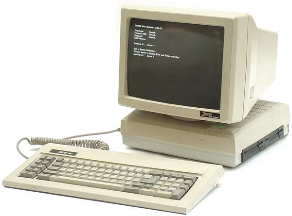

Conheça o primeiro console de mesa, o GamePlace2000! Um console feito para ser semelhante a computadores, porém focado em ser utilizado para jogos, ao invés de trabalho.
Além disso, o GamePlace2000 possui propriedades gráficas capazes de gerar tanto jogos 2D, quanto jogos 3D, criando experiências incríveis e maravilhosas que seus filhos vão adorar.
Junto a isso, o GamePlace2000 já vem com teclado e mouse customizado, além de uma edição especial de SuperMario64, para você já sair da loja imerso em seus novos jogos incríveis e
inovadores.

O GamePlace2000 é um dos primeiros consoles a possuir leitor de CD, podendo transmitir jogos com maior qualidade e jogabilidade. Não só isso, como também possui um sistema
de armazenamento imbutido em seu console, apagando de vez a nescessidade de memory cards para salvar suas maiores aventuras em seus jogos favoritos. Ele também possui
quatro entradas PS/2 port, permitindo com que você jogue lado a lado com seu melhor amigo jogos multi jogador incríveis.
O GamePlace2000 possui diversos jogos já lançados para seu sistema. Ele possui, tanto ports de jogos de outros consoles, quanto jogos totalmente originais.
Alguns deles seriam: